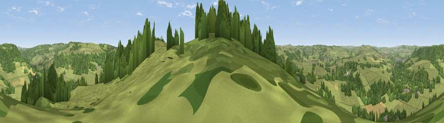

Viewpoint near Stanton-in-Peak
#19292 in England · top 26% of its area beats it · near Stanton-in-PeakWhere it is
The exact computed spot (SK 24675 64725). Click the marker for map links.
The view, rendered

A 360° render of this exact spot computed from the terrain model, tree cover and land cover — summer colours, afternoon light, calibrated against photographs of famous viewpoints. Real trees, hedges and buildings will differ in detail.
The panorama
Grey silhouette: terrain skyline in each direction (720 bearings, Earth curvature and refraction included). Dashed green: skyline with trees (+15 m) and buildings (+8 m) as obstacles. Blue strip: how far the ground is visible on each bearing.
Where the view opens
Wedge length = distance to the farthest visible ground on that bearing (vegetation-aware). Rings at 10, 25 and 50 km.
What fills the view
67% grassland · 30% woodland · 2% cropland · 1% built-up
Angular shares of the visible panorama (visual magnitude), not map area. Landscape diversity 0.34 (0–1 Shannon).
Key numbers
More beautiful places nearby
The staircase of upgrades: each row has a higher view potential than everything closer. Driving times are estimates from straight-line distance, calibrated against real road routing — check an actual route before setting out.
| Place | Direction | Drive | Score |
|---|---|---|---|
| Viewpoint near Northwood | E · 3 km | ~7 min | 53.6 |
| Viewpoint near Tinkersley | ENE · 3 km | ~7 min | 65.6 |
| Viewpoint near Middleton | SSE · 9 km | ~18 min | 66.4 |
| Harboro Rocks | S · 9 km | ~18 min | 66.7 |
| High Rake | NNW · 9 km | ~18 min | 71.1 |
| Crich Stand | SE · 14 km | ~25 min | 73.0 |
| Alport Height | SSE · 14 km | ~26 min | 73.9 |
| Tissington Hill | SW · 15 km | ~27 min | 75.5 |
53.17906, -1.63226 · source: screening · position refined by local search. Computed location — check access rights before visiting.